Computed Torque Control of a Two-Link Robot
Individual Academic Project | Tecnológico de Monterrey | April 2026
Dynamic modeling, trajectory tracking, and controller evaluation using Python, ROS, and MATLAB.
Subtitles are available in Spanish, English, and German.
Select your preferred language under ⚙ → Subtitles.
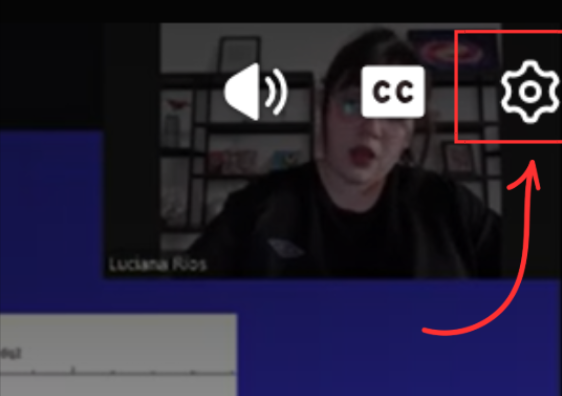
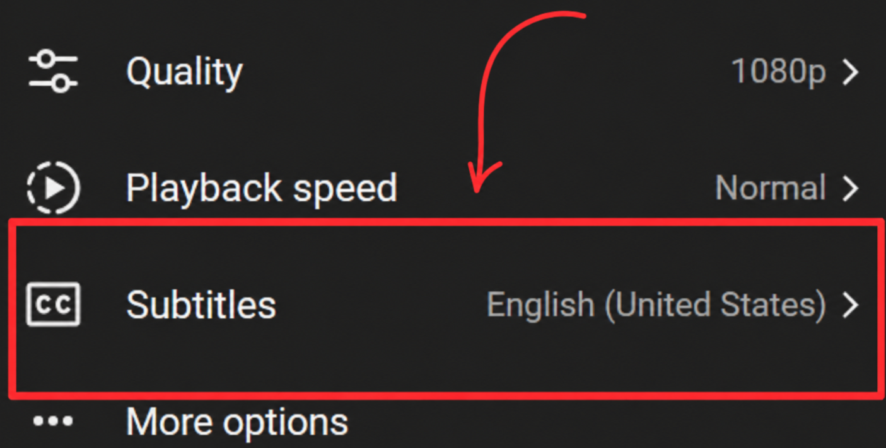
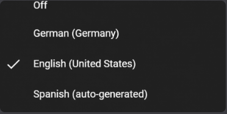
For the best viewing experience, keep the video embedded on this page; subtitles may disappear in full-screen mode on some devices. Enjoy the video ⬇️
PROJECT OVERVIEW
Implemented Computed Torque Control (CTC) for a simulated two-link robot. The controller combines dynamic model compensation with proportional–derivative feedback to follow sinusoidal joint trajectories.
Performance was evaluated through joint-state plots, phase diagrams, tracking errors, and tests with different gains, reference trajectories, and torque limits.
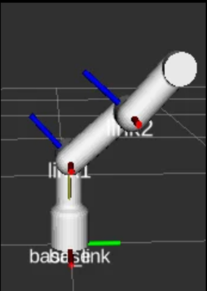
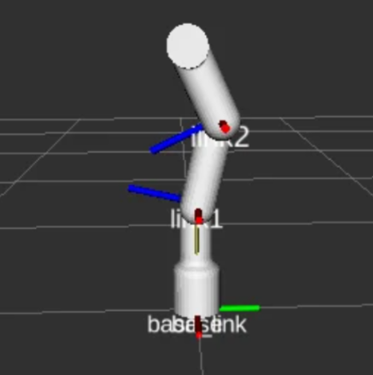
THE ENGINEERING CHALLENGE
Control two coupled joints while accounting for inertia, Coriolis and centrifugal effects, and gravity. The objective was to achieve accurate trajectory tracking with a fast, smooth response while respecting actuator torque limits.
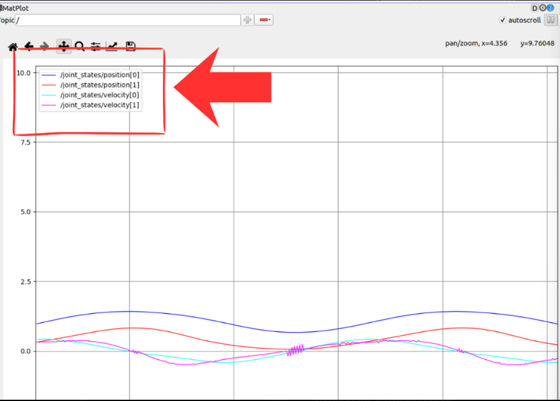
CONTROL STRATEGY
The controller calculates joint torques using the robot's dynamic model:
τ = M(q)·v + C(q, q̇)·q̇ + G(q)
The auxiliary input combines desired acceleration with PD feedback:
v = q̈d + Kd(q̇d − q̇) + Kp(qd − q)
Under ideal model compensation and without torque saturation, this produces second-order tracking-error dynamics:
ë + Kd ė + Kp e = 0
This allowed gain selection to focus on response speed and damping.
SYSTEM ARCHITECTURE & FLOWCHARTS
1. Control Algorithm – From Feedback to Torque Commands
The algorithm initializes the ROS node, subscriber, and publisher, then waits for joint-state feedback. Each cycle reads joint positions and velocities, generates reference signals, and calculates tracking errors.
It then evaluates the dynamic model, computes CTC torques, applies saturation limits, and publishes the commands. The cycle repeats while ROS remains active.
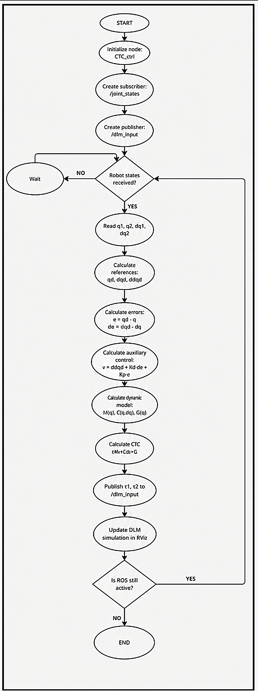
2. ROS Architecture – Communication & Visualization
The joint_states topic provides position and velocity feedback to the controller. The controller calculates the required torques and sends them to the simulated manipulator through dlm_input.
State-publishing components provide the transforms used to visualize robot motion in RViz, connecting feedback, control commands, and simulation.
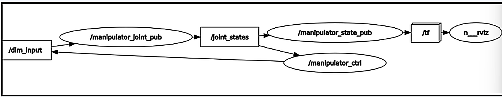
3. Gain-Tuning Workflow – Accuracy & Damping
The tuning process begins by selecting Kp and Kd, simulating the system, and evaluating the tracking. The workflow proposes increasing Kp when error is high and increasing Kd when oscillation or overshoot is excessive.
Each adjustment is followed by another performance and stability assessment to identify a suitable balance between accuracy, speed, and damping.
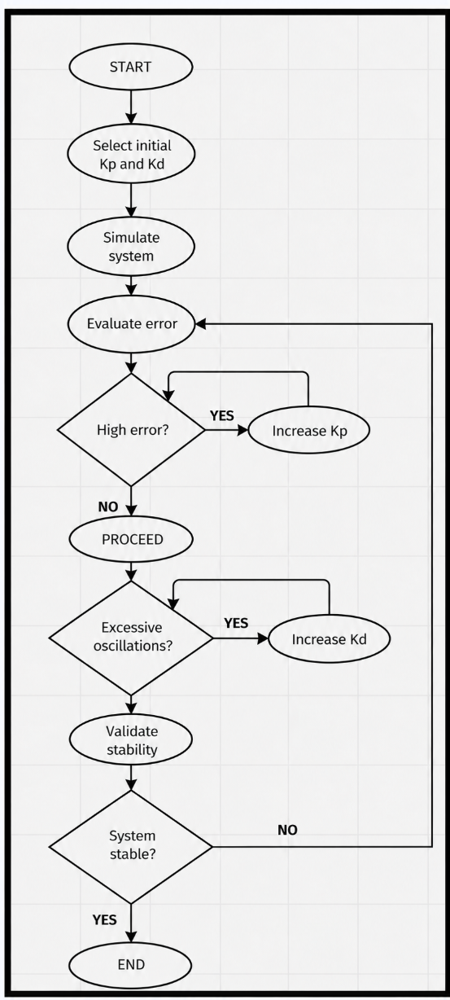
ROS IMPLEMENTATION
The controller ran as a Python ROS node configured at 300 Hz.
- Read joint positions and velocities from /joint_states.
- Generate desired positions, velocities, and accelerations.
- Calculate tracking errors and model-based torque commands.
- Apply torque limits and publish commands to /dlm_input.
- Monitor simulated motion in RViz and the tracking error through the terminal output.
The nominal joint references were: Joint 1: qd = 1 + 0.3 sin(t) rad. Joint 2: qd = 0.5 + 0.7 sin(t) rad. Angular frequency: 1 rad/s.
Analytical derivatives supplied the desired velocities and accelerations. Joint-state plots and phase diagrams were used to assess periodic motion and tracking behavior.
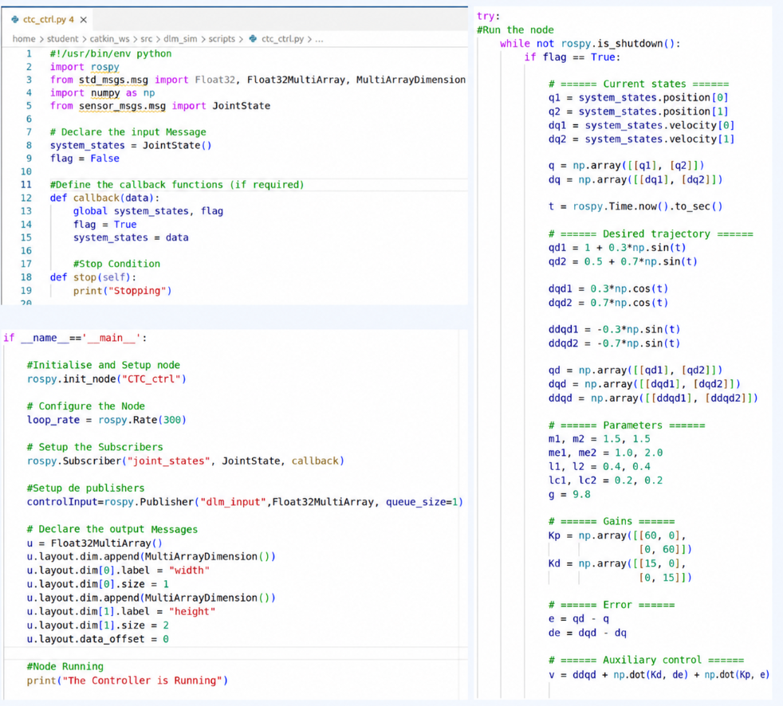
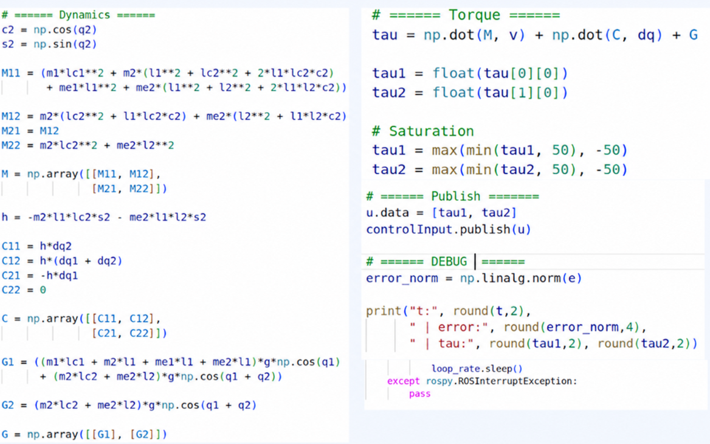
GAIN DESIGN
Selected Kp = 60 and Kd = 15 for both joints, balancing fast convergence with limited oscillation.
1. Computed Torque Control: Design and Error Dynamics
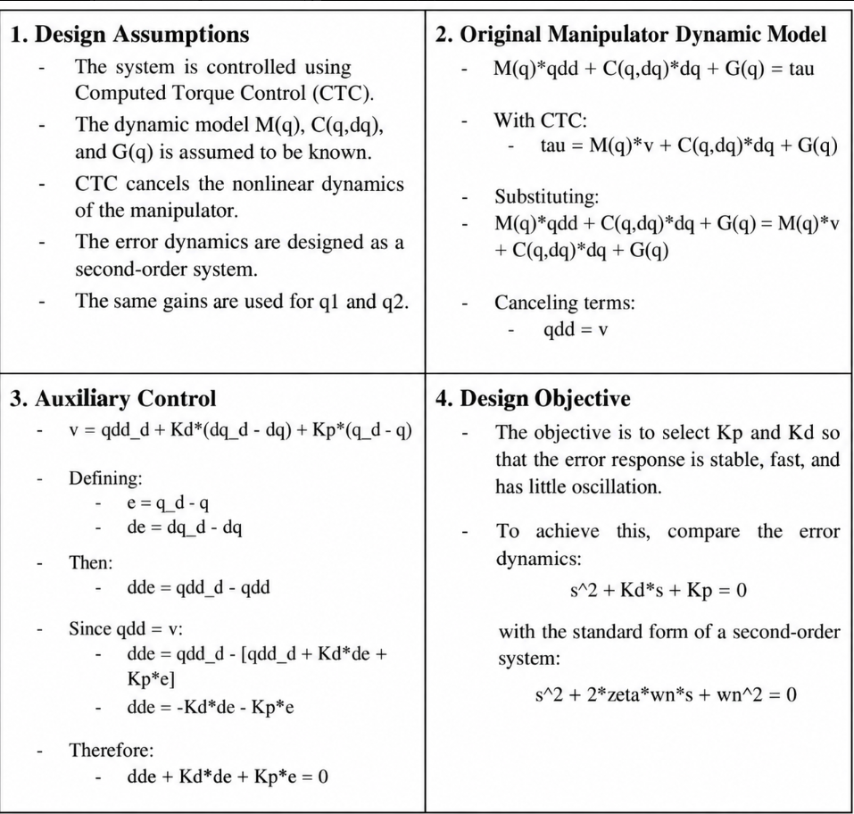
2. MATLAB Analysis of CTC Error Dynamics and Stability
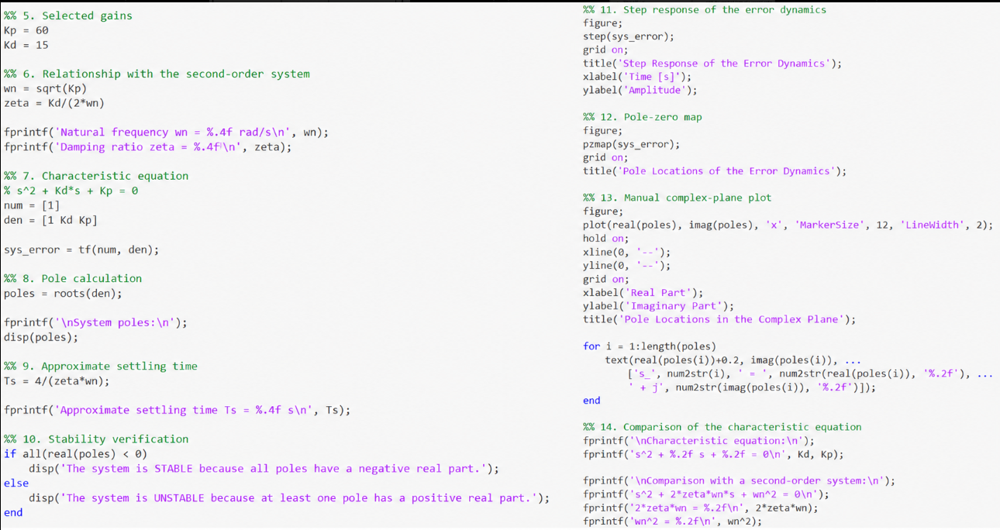
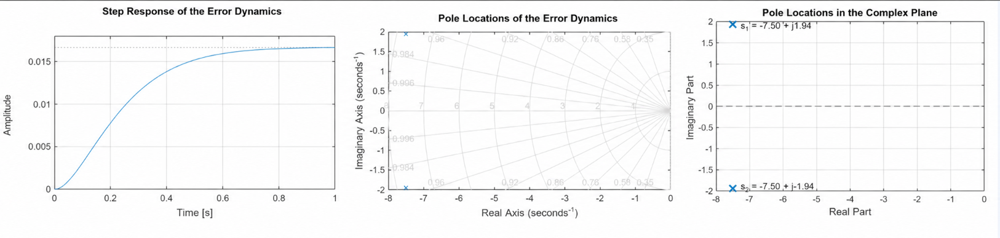
- Natural frequency: 7.75 rad/s.
- Damping ratio: 0.968.
- Poles: -7.50 ± 1.94j.
- Estimated settling time: 0.53 s.
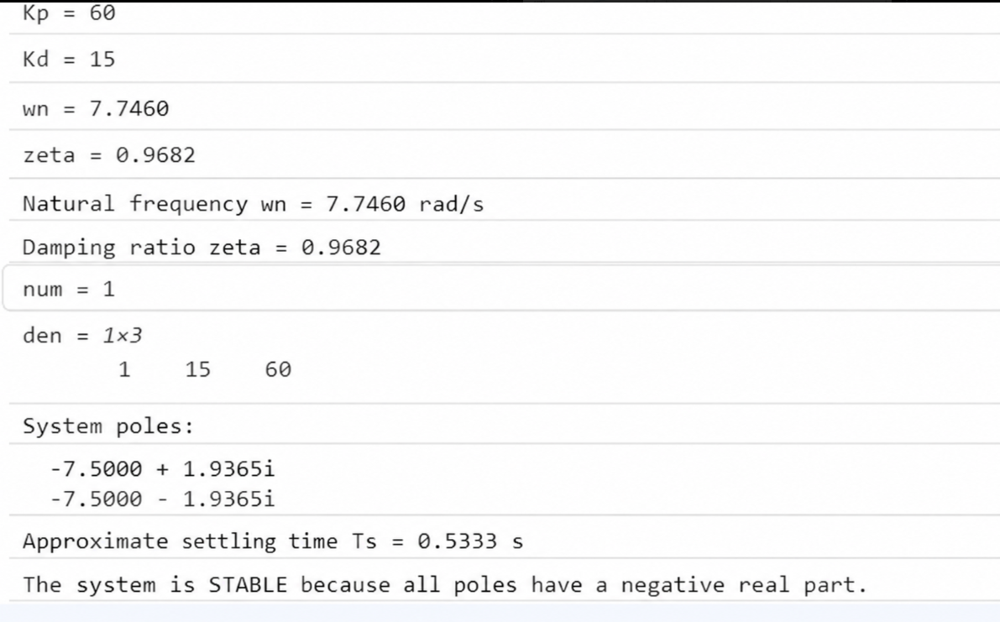
PERFORMANCE TESTING
1. Controller Gains
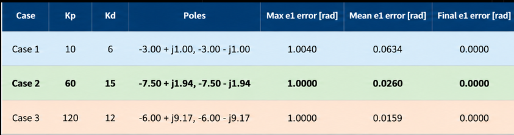
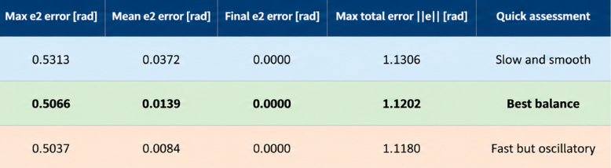
Compared three Kp/Kd combinations:
- 10 / 6: slow, smooth response.
- 60 / 15: selected balance between speed and damping.
- 120 / 12: faster but more oscillatory response.
The comparison showed why lower mean error alone was insufficient to select gains: oscillation and response quality also mattered.
2. Trajectory Amplitude & Frequency
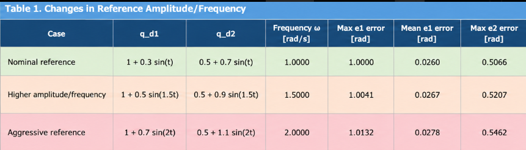
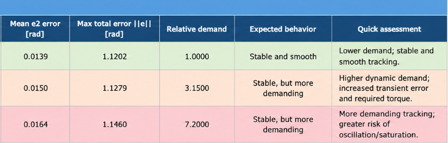
Increased angular frequency from 1 to 1.5 and 2 rad/s, alongside larger joint amplitudes.
More demanding references increase the required dynamic effort and the risk of tracking error, oscillation, and torque saturation.
3. Torque Saturation
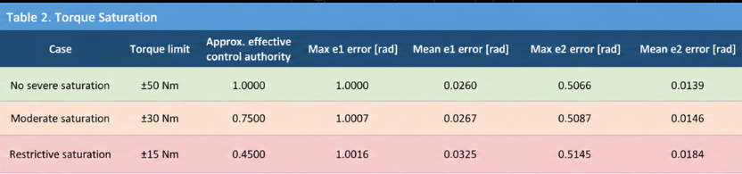
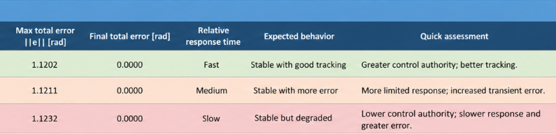
Compared limits of ±50, ±30, and ±15 N·m.
Lower torque limits reduced control authority. The restrictive case showed slower response, larger tracking deviations, and visibly degraded motion in the demonstration.
KEY RESULTS
The presentation reported the following mean joint tracking errors:
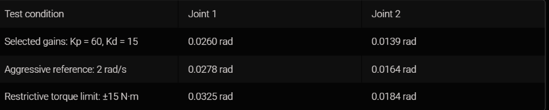
The nominal configuration demonstrated smooth periodic motion and low reported mean tracking errors. More aggressive references and restrictive torque limits degraded performance.
The video also showed larger instantaneous errors during restrictive-torque operation. These observations should be distinguished from the mean values reported in the comparison tables.
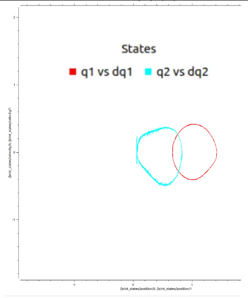
MY CONTRIBUTION
Implemented the CTC algorithm and dynamic model in Python, integrated ROS feedback and torque commands, and analyzed gain selection in MATLAB. Evaluated simulated motion through joint-state plots, phase diagrams, and tests with different gains, reference trajectories, and torque limits.
WHAT I LEARNED
Strengthened my understanding of nonlinear robot dynamics, model-based control, and ROS integration. Learned to balance tracking accuracy with damping and actuator capability, and to distinguish theoretical error-model predictions from behavior observed under torque saturation.